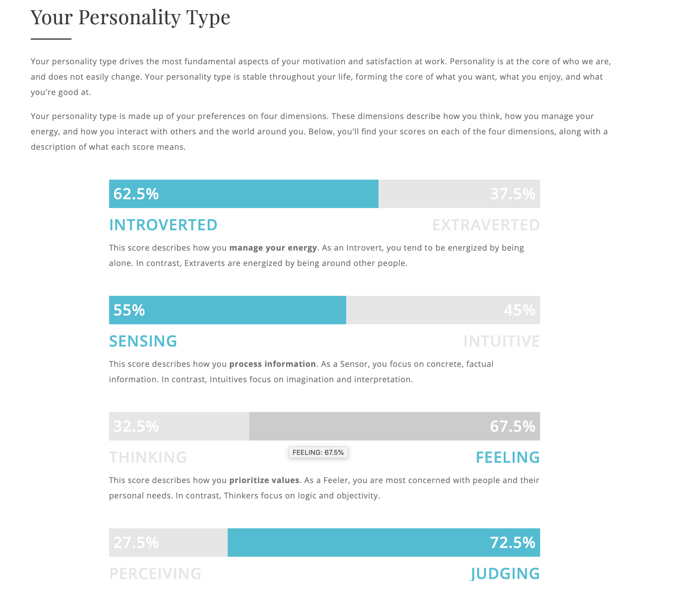

Name- Shanogeeth Shanmuganathan
Student ID- s3799383
Personal email- shanogeeth@gmail.com& RMIT email- s3799383@student.rmit.edu.au
I am from Sri-Lanka, and my religion is Hinduism. I started my career in Trinity College Kandy, Sri-Lanka in 2004. Once I finish my schooling career, I joined the Institute of Australian College of Information and Technology (ACBT) to finish my foundation program in IT field in 2018. Currently following Bachelors of Information Technology in RMIT University in Melbourne. Quite familiar with three types of languages which are, English, Tamil and Sinhalese.
Playing cricket helped me a lot build up my personality as well as my skills in cricket. I was able to represent Sri-Lanka U19 to play against various countries such as India , Australia, England and many. I was able to hold a world record of scoring 270 runs in a One-day match. Later on, I visited Australia as a Contract player in 2017 to play for Forest Hill Cricket Club.
Information Technology has always been one of the most successful field of study in this era. Since childhood, being involved with many events and activities which are related to IT field, motivated me learn more about technology , designing as well as programming. My uncle used to work in a game developing company in USA. He used to make many interesting games , which encouraged me to show more interest in IT.
RMIT is one of the best Universities in the world when it comes to IT as well as Engineering. RMIT enjoys an international reputation for excellence in practical education and outcome-oriented research, preparing graduates for success in a rapidly changing world.
And from what I have heard from friends, RMIT is a great place to study with a very helpful multicultural student population and with a very flexible study system. With its high standards and rankings in both the education and the employment opportunities post studies.
Designing , database and network administration and programming are the three main fields that I am looking forward to cover during my studies here at RMIT. These three fields will be very much important to myself with my job preference in future.
https://www.seek.com.au/job/39705923?searchrequesttoken=34bcf16d-2c5a-4079-8de9-787258f78d05&type=standard
_
Develop software according to the requirements with the approved design from the client. Once the completion of the unit, system and integration testing of software to ensure the highest quality of it. The main reason to pick this position is because it is from a well reputed company. It helps to move around with professionals and mainly to work in a competitive environment which helps to develop skills working with professionals.
Skills and qualification required.
• Should be an expert developer with high experience in Core Java.
• Should be able learn new entities to develop knowledge about Java and should be able to engage in relevant conferences.
• Should have a strong understanding and experience about Amazon Web services application architectures and in RESTful web services and architecture.
• Experience in working with Kafka, Kubernetes, Scala and Python.
Current skills and qualification I have.
• Completion of Foundation program in IT with high percentage.
• Completion of Introductory programming which includes Python and Pseudo code.
• Currently following Bachelors if Information technology.
• Following a course in Java with the important facts.
Plans to obtain skills, qualifications and experience
Have to complete the Bachelors program successfully with a higher percentage. Getting involved with many projects in Java to gain more experience . Have to follow relevant courses to Java. for example, SQL, Ruby, C++, PHP as such. Working with expertise to gain more knowledge about the relevant fields. Studying about Amazon Web services and RESTful web services and architecture. After completion of the course, working in small companies to have a basic idea about software engineering.
Myers-Briggs test.

Learning style test.
Big five Personality test.
O- Openness
C-Conscientiousness
E-Extraversion
A-Agreeableness
N-Neuroticism
These results evaluate my personality skills and learning style . It helps to identify the strengths and weaknesses of the relevant sections. According to the Myer-Briggs test, I have identified as a caring creator. Tactile learning will be more suitable according to Learning style test. Finally, according to Big five Personality test, 75% belongs to Agreeableness.
It will help to identify the strengths and to takes risks to succeed in a relevant task. It will help to create a positive executive presence; it will be easy to share things which I am good at.
Should be able to form a group where each and individual differs with different skills and personalities . Build relationships among others where you will be able to develop skills and personalities in which you lack off.

1. In recent years the growth of the mobile applications has been immense and influential. A developer evangelist provided a report concluding that users are highly committed to their own fitness apps. A fitness app which includes all types of exercises including meal plans for the different types of people will be a great success in the industry. This app is focused on youngsters to start up with basic exercises to do at their own premises, which are apart from gym. This app will consist of advanced features where user will be able to store the gains at the end of the workout. This app will be able to satisfy the user needs to maintain a healthy lifestyle.
2. Looking at existing apps, focusing especially on fitness applications, there are a lot of studies in regards to key external drivers of health and fitness. “Spending on gyms and fitness centers positively correlates with increased health awareness across the population.” (IBIS World. Industry research reports, 2018). According to the industry report of fitness centers from IBIS World, the increase in health consciousness means people are more concerned about their health and are more likely to exercise. The numbers are expected to rise and the opportunity for growth in this field is positive. This is mainly to promote fitness and encourage students and workers to develop a healthy lifestyle by staying active and keep moving throughout consistently .
3. The fitness app helps users to do different routines or exercises based on their chosen plan or workouts of the day. It records the exercises the users have done and allows users to share this with the community to keep accountable. The app acts as a personal trainer and helps users get fit with more than 100 different workouts ranging form strength and endurance to mobility and yoga. Its purpose is also to keep users excited and motivated by featuring famous athletes to “train” them. The app also helps users to track their progress according to the fitness level they have identified in the first place. One of its most important purpose is to provide users with exercises they can follow, but the plans are customizable according to the needs or goals of the user. The app also wants its users to keep motivated by rewarding them badges or milestone achievements as to challenge the users as well.
Main Tasks:
1. Manually input data based on the type of exercise (football, boxing, cycling, walking, running, pilates, etc) and share with the community, displayed on the feed.
This task is helpedby the application because users are supported and get asked questions regarding their personal exercises outside what are in the app. They are also able to take a picture for them to upload as proof that they have completed their exercises.
2. Share exercises or finished programs to the community. Users can comment and like other people’s pictures. The user can also share to other platforms or social media.
This task is helpedby the application because users can easily share their finished workouts without having a lot of steps to go through. It is very easy and straight- forward to share.
However, this is also hinderedby the application because the feed features workouts more than the community feed, which is similar to the workout feature. User can get confused or see this as redundant and could get bored.
3. View activity such as total workouts, achievements of milestones, and poster achievements after finishing workouts.
The app helpskeep the user accountable as they cannot unlock the milestones or achieve anything unless the workouts are completed.
The app helpskeep the user motivated as well by rewarding badges that they can share to other users.
4. View workout routines that are according to the user’s needs and planning exercise plans accustomed to user’s goals.
The app helpsusers to browse exercises by different categories. There is also a search button for quick searches. The workouts range from broad, to top picks for users and also current plans.
The app could potentially hinder users to view workouts efficiently because there are a lot of tabs so the users could end up not finishing one task, as they can get distracted with other tabs.
4. MIT app inventor is a software which I looking forward to build my mobile application on. MIT App Inventor is an intuitive, visual programming environment that allows everyone even children to build fully functional apps for smartphones and tablets. Blocks-based tool facilitates the creation of complex, high-impact apps in significantly less time than traditional programming environments. Angular Material Design, React Native and Firebase are the three tools which I might use to create the fitness app. Angular Material Design has a set of unique and impressive features that make it the best for an app development. React Native provides a way for developers to utilize the power of Reactjs with the actual IOS or Android UI components. And Firebase is a remarkable tool that can assist mobile applications of all sizes to meet their development needs because it includes a wide range of services within its offerings.
5. Design skills, QA and Performance testing skills, Modern language programming skills, Cross platform skills, Backend computing and Data skills are the main set of skills which is needed to develop an mobile application.
When the project comes to a ending note,we end up with a great amount of experience that is going to help us in the career throughout. We also get into knowing what IT and its new innovations in the near future is all about.And thereby helping us lead to end up with the professional fields we aim to reach in life.In this era in which I am educating myself in this field,developing a smartphone app immensely gets me into the right atmosphere of moving into the field of practical Applicational side of IT.The right exposure to coding is achieved by getting myself hands on with this project.The App that am creating is a fitness app which is going to adhere to the needs of all fitness athletes helping them record their fitness records and also help them follow their fitness routines in the ways they want it to consistently.The development is going to help the beginners of fitness to follow a right routine without confusion and the professionals to take their fitness to the next level with a proper and organized things in fitness.This is going to create a fitness revolution.